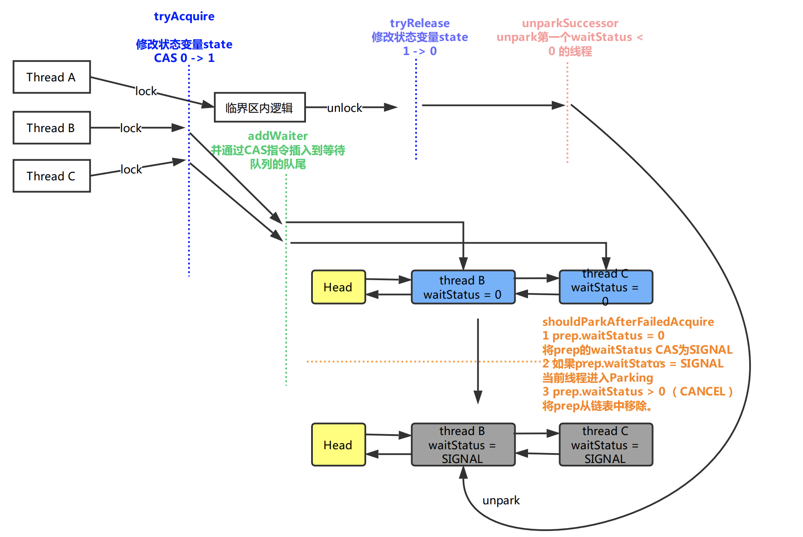

<!DOCTYPE html>
<html>
<head><meta name="generator" content="Hexo 3.8.0">
  <meta charset="utf-8">
  

  
  <title>Java AQS | Imoko</title>
  <meta name="viewport" content="width=device-width, initial-scale=1, maximum-scale=1">
  <meta name="description" content="java AbstractQueuedSynchronizer ###以ReentrantLock为例 首先ReentrantLock有公平和非公平模式:NonfairSync 和 FairSync FairSynclock方法的定义：获取锁。  如果锁没有被其他线程获取，则获取锁并立刻返回，把锁的count设为1. 如果锁已经被当前线程持有，则立刻返回，把锁的count +1. 如果锁被其他线程">
<meta property="og:type" content="article">
<meta property="og:title" content="Java AQS">
<meta property="og:url" content="http://yoursite.com/2018/04/01/Java_AQS/index.html">
<meta property="og:site_name" content="Imoko">
<meta property="og:description" content="java AbstractQueuedSynchronizer ###以ReentrantLock为例 首先ReentrantLock有公平和非公平模式:NonfairSync 和 FairSync FairSynclock方法的定义：获取锁。  如果锁没有被其他线程获取，则获取锁并立刻返回，把锁的count设为1. 如果锁已经被当前线程持有，则立刻返回，把锁的count +1. 如果锁被其他线程">
<meta property="og:locale" content="default">
<meta property="og:image" content="http://yoursite.com/2018/04/01/Java_AQS/image-20180824040623739.png">
<meta property="og:updated_time" content="2018-11-22T06:34:10.000Z">
<meta name="twitter:card" content="summary">
<meta name="twitter:title" content="Java AQS">
<meta name="twitter:description" content="java AbstractQueuedSynchronizer ###以ReentrantLock为例 首先ReentrantLock有公平和非公平模式:NonfairSync 和 FairSync FairSynclock方法的定义：获取锁。  如果锁没有被其他线程获取，则获取锁并立刻返回，把锁的count设为1. 如果锁已经被当前线程持有，则立刻返回，把锁的count +1. 如果锁被其他线程">
<meta name="twitter:image" content="http://yoursite.com/2018/04/01/Java_AQS/image-20180824040623739.png">
  
    <link rel="alternate" href="/atom.xml" title="Imoko" type="application/atom+xml">
  
  
    <link rel="icon" href="/favicon.png">
  
  
    <link href="//fonts.googleapis.com/css?family=Source+Code+Pro" rel="stylesheet" type="text/css">
  
  <link rel="stylesheet" href="/css/style.css">
</head>
</html>
<body>
  <div id="container">
    <div id="wrap">
      <header id="header">
  <div id="banner"></div>
  <div id="header-outer" class="outer">
    <div id="header-title" class="inner">
      <h1 id="logo-wrap">
        <a href="/" id="logo">Imoko</a>
      </h1>
      
    </div>
    <div id="header-inner" class="inner">
      <nav id="main-nav">
        <a id="main-nav-toggle" class="nav-icon"></a>
        
          <a class="main-nav-link" href="/">Home</a>
        
          <a class="main-nav-link" href="/archives">Archives</a>
        
      </nav>
      <nav id="sub-nav">
        
          <a id="nav-rss-link" class="nav-icon" href="/atom.xml" title="RSS Feed"></a>
        
        <a id="nav-search-btn" class="nav-icon" title="Search"></a>
      </nav>
      <div id="search-form-wrap">
        <form action="//google.com/search" method="get" accept-charset="UTF-8" class="search-form"><input type="search" name="q" class="search-form-input" placeholder="Search"><button type="submit" class="search-form-submit">&#xF002;</button><input type="hidden" name="sitesearch" value="http://yoursite.com"></form>
      </div>
    </div>
  </div>
</header>
      <div class="outer">
        <section id="main"><article id="post-Java_AQS" class="article article-type-post" itemscope="" itemprop="blogPost">
  <div class="article-meta">
    <a href="/2018/04/01/Java_AQS/" class="article-date">
  <time datetime="2018-03-31T16:00:00.000Z" itemprop="datePublished">2018-04-01</time>
</a>
    
  </div>
  <div class="article-inner">
    
    
      <header class="article-header">
        
  
    <h1 class="article-title" itemprop="name">
      Java AQS
    </h1>
  

      </header>
    
    <div class="article-entry" itemprop="articleBody">
      
        <p>java AbstractQueuedSynchronizer</p>
<p>###以ReentrantLock为例</p>
<p>首先ReentrantLock有公平和非公平模式:<code>NonfairSync</code> 和 <code>FairSync</code></p>
<h4 id="FairSync"><a href="#FairSync" class="headerlink" title="FairSync"></a>FairSync</h4><p>lock方法的定义：获取锁。</p>
<ul>
<li>如果锁没有被其他线程获取，则获取锁并立刻返回，把锁的count设为1.</li>
<li>如果锁已经被当前线程持有，则立刻返回，把锁的count +1.</li>
<li>如果锁被其他线程持有，则当前线程会失去被调度的权利，等待被唤醒。</li>
</ul>
<p>假设有3个线程同时调用ReentrantLock的 lock方法。</p>
<p></p>
<p>结合代码的解释可以参考：<a href="https://www.jianshu.com/p/d8eeb31bee5c" target="_blank" rel="noopener">https://www.jianshu.com/p/d8eeb31bee5c</a></p>
<p>Synchronizer 同步器</p>
<p>同步队列，同步节点，同步状态</p>
<p><strong>AbstractQueuedSynchronizer</strong>  被用来实现blocking lock或者相关的同步器（semaphores，events）。这个类的基础是  <code>FIFO waiting queue</code>。且用一个原子的int值来表示同步状态。</p>
<p>###子类该怎么定义？</p>
<p>子类应该被定义为一个非public的内部帮助类。</p>
<p>这个类为internal queue提供了各种便利的方法，同时也适用于condition objects。你可以引入这些到你的类里，做一些synchronization mechanics。</p>
<h3 id="独占式同步状态的获取，释放"><a href="#独占式同步状态的获取，释放" class="headerlink" title="独占式同步状态的获取，释放"></a>独占式同步状态的获取，释放</h3><p>通过调用同步器的 acquire（int arg）方法来<strong>获取</strong>到同步状态。</p>
<p>线程获取锁失败后，进入同步队列。</p>
<p>首先，调用tryAcquire方法，尝试获取锁。如果获取失败，则构造<strong>同步节点</strong>，并通过addWaiter方法将<strong>同步节点</strong>加入到<strong>同步队列</strong>的尾部，最后调用acquireQueued方法，使该<strong>同步节点</strong>以死循环的方式获取到锁，且非中断。只有前置节点为头节点并且tryAcquire成功返回的时候，才会返回。否则就会让线程停止调度，直到unpark或者线程中断。<u>但是，如果前置节点为头结点，但是tryAcquire返回失败，怎么办？</u></p>
<p>通过同步器的relase方法来<strong>释放</strong>同步状态。</p>
<p>该方法会先调用tryRelease方法，然后会唤醒其他后续节点，通过调用unparkSuccessor方法，即调用了unpark方法。</p>
<p>同步节点进入同步队列之后，就进入了一个自旋的过程，每个同步节点都在自己观察，当条件满足，就可以从自旋中退出。</p>
<p>###用法：</p>
<p>如果使用这个类作为自定义的synchronozier的基础。</p>
<p>#####1必须实现下面的方法：</p>
<p>  tryAcquire ： 查询是否可以获取，如果可以则获取。<br>  tryRelease<br>  tryAcquireShared<br>  tryReleaseShared<br>  isHeldExclusively</p>
<p>上面的方法的实现，要尽量简短，不能<strong>阻塞</strong>。</p>
<p>#####2 同步状态的修改（Synchronization state）<br> getState<br> setState<br> compareAndSetState<br> 来修改同步状态，可以保证状态的改变是安全的。</p>
<p>######3 The CORE of exclusive synchronization:<br><figure class="highlight java"><table><tr><td class="gutter"><pre><span class="line">1</span><br><span class="line">2</span><br><span class="line">3</span><br><span class="line">4</span><br><span class="line">5</span><br><span class="line">6</span><br><span class="line">7</span><br><span class="line">8</span><br><span class="line">9</span><br></pre></td><td class="code"><pre><span class="line">Acquire:</span><br><span class="line">    <span class="keyword">while</span> (!tryAcquire(arg)) &#123;</span><br><span class="line">       <span class="comment">//enqueue thread if it is not already queued;</span></span><br><span class="line">       <span class="comment">//possibly block current thread;</span></span><br><span class="line">    &#125;</span><br><span class="line"></span><br><span class="line">Release:</span><br><span class="line">    <span class="keyword">if</span> (tryRelease(arg))</span><br><span class="line">       <span class="comment">//unblock the first queued thread;</span></span><br></pre></td></tr></table></figure></p>
<p>#####Barging Strategy<br>TODO</p>
<p>#####Examples</p>
<p>举了2个例子：<strong>Mutex</strong> 和  <strong>BooleanLatch</strong></p>
<p><strong>Mutext</strong><br>什么是mutex？Mutual（彼此的） exclusion 的缩写。我们使用mutex去保护临界区，从而防止竞争。进入临界区之前调用 <strong>acquire</strong> ，离开临界区之前调用<strong>release</strong>。<br><figure class="highlight java"><table><tr><td class="gutter"><pre><span class="line">1</span><br><span class="line">2</span><br><span class="line">3</span><br><span class="line">4</span><br><span class="line">5</span><br><span class="line">6</span><br><span class="line">7</span><br><span class="line">8</span><br><span class="line">9</span><br><span class="line">10</span><br></pre></td><td class="code"><pre><span class="line">aquire()&#123;</span><br><span class="line">    <span class="keyword">while</span> (!available)&#123;</span><br><span class="line">        ;<span class="comment">// busy wait</span></span><br><span class="line">    &#125;</span><br><span class="line">    available = <span class="keyword">false</span>;</span><br><span class="line">&#125;</span><br><span class="line"></span><br><span class="line">release() &#123;</span><br><span class="line">    available = <span class="keyword">true</span>;</span><br><span class="line">&#125;</span><br></pre></td></tr></table></figure></p>
<p><strong>BooleanLatch</strong><br>BooleanLatch是non-exclusive，所以使用<code>shared</code> aquire 和 release方法。<br><figure class="highlight java"><table><tr><td class="gutter"><pre><span class="line">1</span><br><span class="line">2</span><br><span class="line">3</span><br><span class="line">4</span><br><span class="line">5</span><br><span class="line">6</span><br><span class="line">7</span><br><span class="line">8</span><br><span class="line">9</span><br><span class="line">10</span><br><span class="line">11</span><br><span class="line">12</span><br><span class="line">13</span><br><span class="line">14</span><br><span class="line">15</span><br><span class="line">16</span><br><span class="line">17</span><br><span class="line">18</span><br><span class="line">19</span><br><span class="line">20</span><br><span class="line">21</span><br></pre></td><td class="code"><pre><span class="line"><span class="class"><span class="keyword">class</span> <span class="title">BooleanLatch</span> </span>&#123;</span><br><span class="line"></span><br><span class="line">  <span class="keyword">private</span> <span class="keyword">static</span> <span class="class"><span class="keyword">class</span> <span class="title">Sync</span> <span class="keyword">extends</span> <span class="title">AbstractQueuedSynchronizer</span> </span>&#123;</span><br><span class="line">    <span class="function"><span class="keyword">boolean</span> <span class="title">isSignalled</span><span class="params">()</span> </span>&#123; <span class="keyword">return</span> getState() != <span class="number">0</span>; &#125;</span><br><span class="line"></span><br><span class="line">    <span class="function"><span class="keyword">protected</span> <span class="keyword">int</span> <span class="title">tryAcquireShared</span><span class="params">(<span class="keyword">int</span> ignore)</span> </span>&#123;</span><br><span class="line">      <span class="keyword">return</span> isSignalled() ? <span class="number">1</span> : -<span class="number">1</span>;</span><br><span class="line">    &#125;</span><br><span class="line"></span><br><span class="line">    <span class="function"><span class="keyword">protected</span> <span class="keyword">boolean</span> <span class="title">tryReleaseShared</span><span class="params">(<span class="keyword">int</span> ignore)</span> </span>&#123;</span><br><span class="line">      setState(<span class="number">1</span>);</span><br><span class="line">      <span class="keyword">return</span> <span class="keyword">true</span>;</span><br><span class="line">    &#125;</span><br><span class="line">  &#125;</span><br><span class="line"></span><br><span class="line">  <span class="keyword">private</span> <span class="keyword">final</span> Sync sync = <span class="keyword">new</span> Sync();</span><br><span class="line">  <span class="function"><span class="keyword">public</span> <span class="keyword">boolean</span> <span class="title">isSignalled</span><span class="params">()</span> </span>&#123; <span class="keyword">return</span> sync.isSignalled(); &#125;</span><br><span class="line">  <span class="function"><span class="keyword">public</span> <span class="keyword">void</span> <span class="title">signal</span><span class="params">()</span>         </span>&#123; sync.releaseShared(<span class="number">1</span>); &#125;</span><br><span class="line">  <span class="function"><span class="keyword">public</span> <span class="keyword">void</span> <span class="title">await</span><span class="params">()</span> <span class="keyword">throws</span> InterruptedException </span>&#123;</span><br><span class="line">    sync.acquireSharedInterruptibly(<span class="number">1</span>);</span><br><span class="line">  &#125;</span><br></pre></td></tr></table></figure></p>
<h3 id="waitStatus-讲解"><a href="#waitStatus-讲解" class="headerlink" title="waitStatus 讲解"></a>waitStatus 讲解</h3><h3 id="Latch"><a href="#Latch" class="headerlink" title="Latch"></a>Latch</h3><p>作用：A synchronization aid that allows one or more threads to wait until a set of operations being performed in other threads completes.</p>
<p>主要方法： </p>
<p>await()  阻塞等待<code>the count of latch</code>变为0.</p>
<p>CountDown() 给<code>the count of latch</code> -1.</p>

      
    </div>
    <footer class="article-footer">
      <a data-url="http://yoursite.com/2018/04/01/Java_AQS/" data-id="cjpbgxpwi000hy8fy44erd5qk" class="article-share-link">Share</a>
      
      
    </footer>
  </div>
  
    
<nav id="article-nav">
  
    <a href="/2018/04/01/Netty/" id="article-nav-newer" class="article-nav-link-wrap">
      <strong class="article-nav-caption">Newer</strong>
      <div class="article-nav-title">
        
          Netty
        
      </div>
    </a>
  
  
</nav>

  
</article>

</section>
        
          <aside id="sidebar">
  
    
  <div class="widget-wrap">
    <h3 class="widget-title">Categories</h3>
    <div class="widget">
      <ul class="category-list"><li class="category-list-item"><a class="category-list-link" href="/categories/JVM/">JVM</a></li></ul>
    </div>
  </div>


  
    
  <div class="widget-wrap">
    <h3 class="widget-title">Tags</h3>
    <div class="widget">
      <ul class="tag-list"><li class="tag-list-item"><a class="tag-list-link" href="/tags/GC/">GC</a></li><li class="tag-list-item"><a class="tag-list-link" href="/tags/JVM/">JVM</a></li></ul>
    </div>
  </div>


  
    
  <div class="widget-wrap">
    <h3 class="widget-title">Tag Cloud</h3>
    <div class="widget tagcloud">
      <a href="/tags/GC/" style="font-size: 20px;">GC</a> <a href="/tags/JVM/" style="font-size: 10px;">JVM</a>
    </div>
  </div>

  
    
  <div class="widget-wrap">
    <h3 class="widget-title">Archives</h3>
    <div class="widget">
      <ul class="archive-list"><li class="archive-list-item"><a class="archive-list-link" href="/archives/2018/12/">December 2018</a></li><li class="archive-list-item"><a class="archive-list-link" href="/archives/2018/11/">November 2018</a></li><li class="archive-list-item"><a class="archive-list-link" href="/archives/2018/10/">October 2018</a></li><li class="archive-list-item"><a class="archive-list-link" href="/archives/2018/08/">August 2018</a></li><li class="archive-list-item"><a class="archive-list-link" href="/archives/2018/07/">July 2018</a></li><li class="archive-list-item"><a class="archive-list-link" href="/archives/2018/05/">May 2018</a></li><li class="archive-list-item"><a class="archive-list-link" href="/archives/2018/04/">April 2018</a></li></ul>
    </div>
  </div>


  
    
  <div class="widget-wrap">
    <h3 class="widget-title">Recent Posts</h3>
    <div class="widget">
      <ul>
        
          <li>
            <a href="/2018/12/04/hotspot_jvm_GC_CMS/">hotspot_jvm_GC_CMS</a>
          </li>
        
          <li>
            <a href="/2018/11/22/GC_overview/">GC_overview</a>
          </li>
        
          <li>
            <a href="/2018/11/22/Java_synchronizer/">JVM Synchronizer</a>
          </li>
        
          <li>
            <a href="/2018/11/22/BTreeStruct/">B-tree数据结构</a>
          </li>
        
          <li>
            <a href="/2018/11/22/DBs_mysql_locks/">Mysql Locks</a>
          </li>
        
      </ul>
    </div>
  </div>

  
</aside>
        
      </div>
      <footer id="footer">
  
  <div class="outer">
    <div id="footer-info" class="inner">
      &copy; 2018 Tao<br>
      Powered by <a href="http://hexo.io/" target="_blank">Hexo</a>
    </div>
  </div>
</footer>
    </div>
    <nav id="mobile-nav">
  
    <a href="/" class="mobile-nav-link">Home</a>
  
    <a href="/archives" class="mobile-nav-link">Archives</a>
  
</nav>
    

<script src="//ajax.googleapis.com/ajax/libs/jquery/2.0.3/jquery.min.js"></script>


  <link rel="stylesheet" href="/fancybox/jquery.fancybox.css">
  <script src="/fancybox/jquery.fancybox.pack.js"></script>


<script src="/js/script.js"></script>


  </div>
</body>
</html>